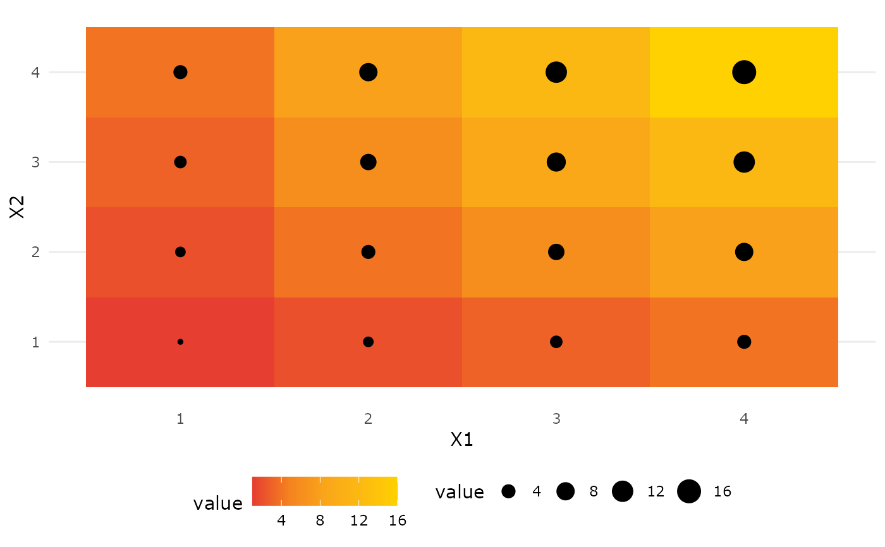

R/theme_usq.R
theme_usq.RdThis theme applies a standard USQ style to ggplot2 graphs,
which includes no y-axis lines, major x-axis grid lines and the Microsoft's
typeface, Verdana, for all text labeling and the legend key at the bottom.
theme_usq(base_size = 11, base_family = "Verdana")
| base_size | base font size, given in pts. |
|---|---|
| base_family | base font family |
The base size is set to 11 by default. For presentations using the option,
base_size will make the fonts larger and more suitable for
presentation slides, e.g., theme_usq(base_size = 24).
library(ggplot2) # Discrete values p1 <- ggplot(mtcars) + geom_point(aes( x = wt, y = mpg, colour = factor(gear) )) + scale_colour_usq("primary") + facet_wrap(~ am) + theme_usq() p1# Continous values df <- reshape2::melt(outer(1:4, 1:4), varnames = c("X1", "X2")) p2 <- ggplot(df, aes(X1, X2)) + geom_tile(aes(fill = value)) + scale_fill_usq("warm", discrete = FALSE) p3 <- p2 + geom_point(aes(size = value)) + theme_usq() p3# Larger base size for presentation slides p4 <- p3 + geom_point(aes(size = value)) + theme_usq(base_size = 24) p4